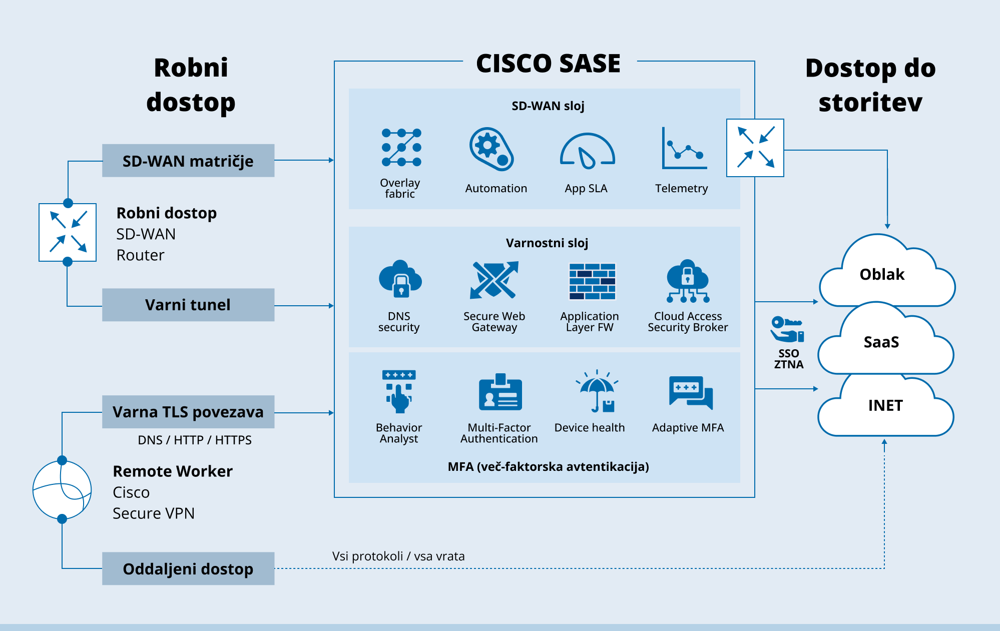

Naši Projekti
Projekt 1: Optimizacija IT Infrastrukture
Opis: Optimizirali smo IT infrastrukturo za srednje veliko podjetje, kar je izboljšalo učinkovitost in znižalo stroške. S tem smo omogočili nemoteno poslovanje in večjo zanesljivost sistemov.
Trajanje: 3 mesece
Rezultat: Zmanjšanje stroškov za 20% in izboljšana varnost.
Projekt 2: Implementacija Oblakovne Rešitve
Opis: Implementirali smo oblakovno rešitev za stranko, kar jim je omogočilo boljšo prožnost in varnost podatkov. Projekt je vključeval migracijo podatkov, nastavitev varnostnih kopij in integracijo z obstoječimi sistemi.
Trajanje: 2 meseca
Rezultat: Povečana prožnost in varnost podatkov, zmanjšanje stroškov za infrastrukturo.
Projekt 3: Razvoj Programske Opreme po Meri
Opis: Razvili smo programsko opremo po meri za specifične potrebe velikega podjetja, kar je izboljšalo njihovo poslovanje in povečalo produktivnost. Vključevala je funkcionalnosti za avtomatizacijo procesov in izboljšano poročanje.
Trajanje: 6 mesecev
Rezultat: Povečana produktivnost za 30% in boljša preglednost poslovnih procesov.
Projekt 4: Postavitev Omrežnih Rešitev
Opis: Za naročnika smo postavili novo omrežno infrastrukturo, ki vključuje tako lokalno omrežje (LAN) kot tudi široko področje omrežja (WAN). Vključena je bila tudi varnostna konfiguracija in nadzorni sistem.
Trajanje: 4 mesece
Rezultat: Zanesljivo omrežje z izboljšano varnostjo in učinkovitostjo.
Projekt 5: Kibernetska Varnost
Opis: Izvedli smo celovito presojo varnosti in implementirali večstopenjske varnostne rešitve, vključno z napredno zaščito pred grožnjami in izobraževanjem zaposlenih o kibernetski varnosti.
Trajanje: 5 mesecev
Rezultat: Zmanjšanje varnostnih incidentov za 50% in izboljšana pripravljenost na kibernetske napade.